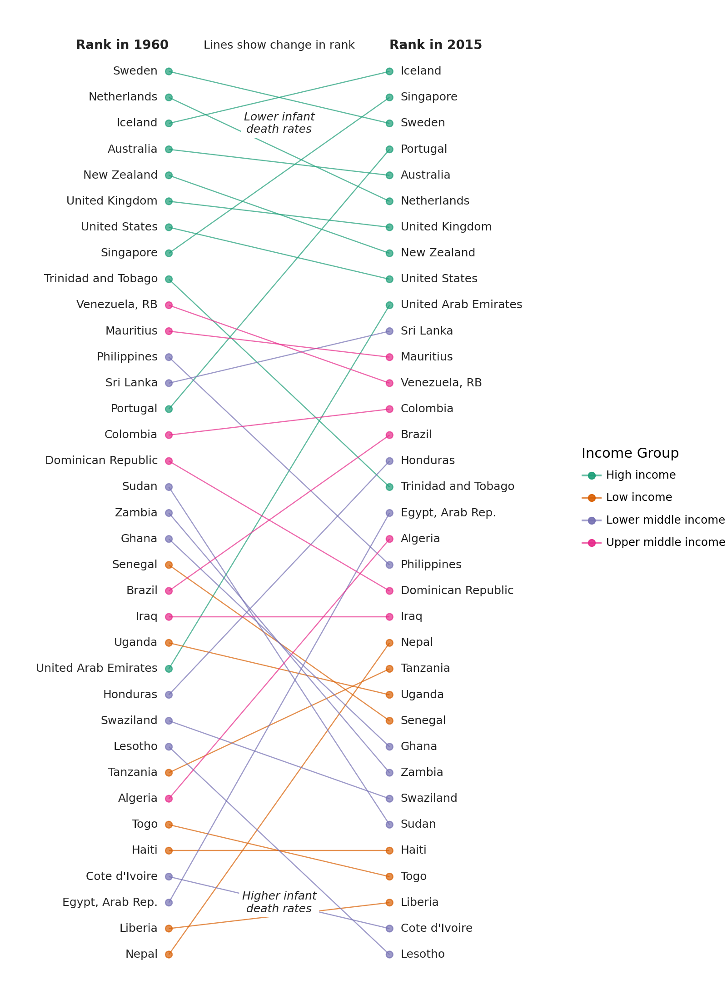
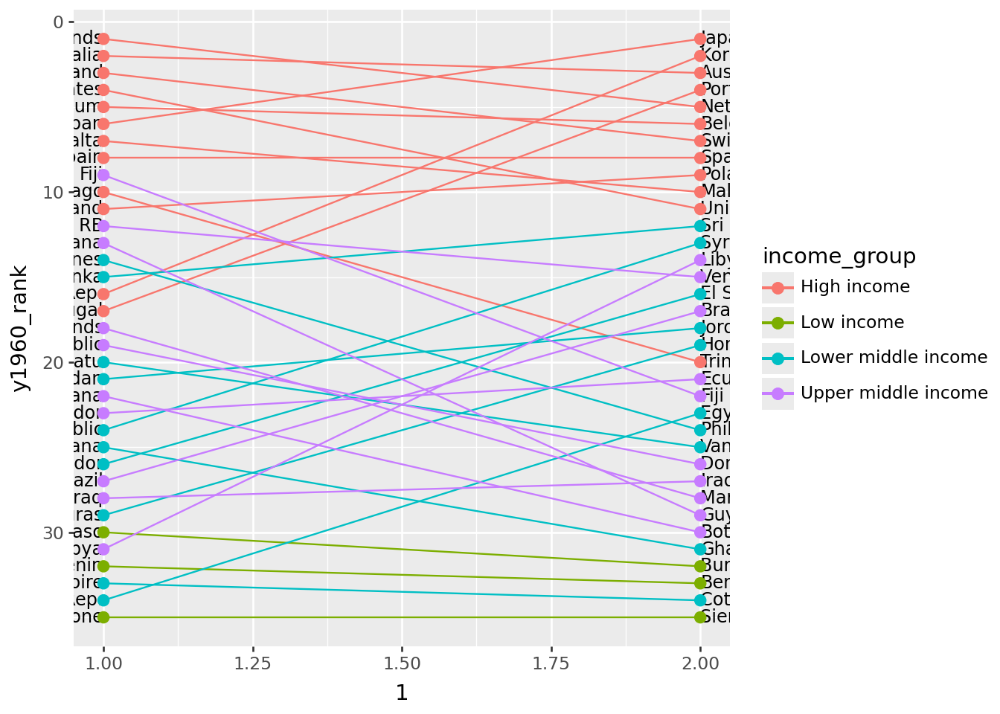
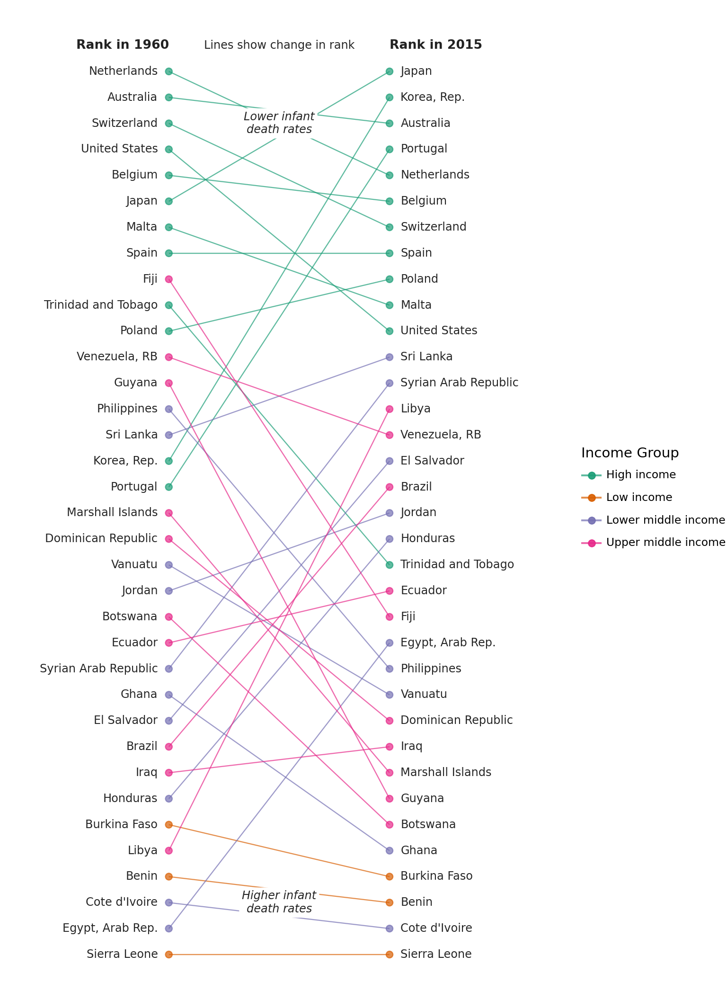

import numpy as np
from plotnine import *
import polars as pl
from polars import colA Change in Rank
segment

Comparing a group of ranked items at two different times
Read the data.
Source: World Bank - Infanct Mortality Rate (per 1,000 live births)b
data = pl.read_csv(
"data/API_SP.DYN.IMRT.IN_DS2_en_csv_v2/API_SP.DYN.IMRT.IN_DS2_en_csv_v2.csv",
skip_rows=4,
null_values="",
truncate_ragged_lines=True,
)
# Columns as valid python variables
year_columns = {c: f"y{c}" for c in data.columns if c[:2] in {"19", "20"}}
data = data.rename(
{"Country Name": "country", "Country Code": "code", **year_columns}
).drop(["Indicator Name", "Indicator Code"])
data.head()
shape: (5, 60)
| country | code | y1960 | y1961 | y1962 | y1963 | y1964 | y1965 | y1966 | y1967 | y1968 | y1969 | y1970 | y1971 | y1972 | y1973 | y1974 | y1975 | y1976 | y1977 | y1978 | y1979 | y1980 | y1981 | y1982 | y1983 | y1984 | y1985 | y1986 | y1987 | y1988 | y1989 | y1990 | y1991 | y1992 | y1993 | y1994 | y1995 | y1996 | y1997 | y1998 | y1999 | y2000 | y2001 | y2002 | y2003 | y2004 | y2005 | y2006 | y2007 | y2008 | y2009 | y2010 | y2011 | y2012 | y2013 | y2014 | y2015 | y2016 | |
|---|---|---|---|---|---|---|---|---|---|---|---|---|---|---|---|---|---|---|---|---|---|---|---|---|---|---|---|---|---|---|---|---|---|---|---|---|---|---|---|---|---|---|---|---|---|---|---|---|---|---|---|---|---|---|---|---|---|---|---|
| str | str | f64 | f64 | f64 | f64 | f64 | f64 | f64 | f64 | f64 | f64 | f64 | f64 | f64 | f64 | f64 | f64 | f64 | f64 | f64 | f64 | f64 | f64 | f64 | f64 | f64 | f64 | f64 | f64 | f64 | f64 | f64 | f64 | f64 | f64 | f64 | f64 | f64 | f64 | f64 | f64 | f64 | f64 | f64 | f64 | f64 | f64 | f64 | f64 | f64 | f64 | f64 | f64 | f64 | f64 | f64 | f64 | str | str |
| "Aruba" | "ABW" | null | null | null | null | null | null | null | null | null | null | null | null | null | null | null | null | null | null | null | null | null | null | null | null | null | null | null | null | null | null | null | null | null | null | null | null | null | null | null | null | null | null | null | null | null | null | null | null | null | null | null | null | null | null | null | null | null | null |
| "Afghanistan" | "AFG" | null | 240.5 | 236.3 | 232.3 | 228.5 | 224.6 | 220.7 | 217.0 | 213.3 | 209.8 | 206.1 | 202.2 | 198.2 | 194.3 | 190.3 | 186.6 | 182.6 | 178.7 | 174.5 | 170.4 | 166.1 | 161.8 | 157.5 | 153.2 | 148.7 | 144.5 | 140.2 | 135.7 | 131.3 | 126.8 | 122.5 | 118.3 | 114.4 | 110.9 | 107.7 | 105.0 | 102.7 | 100.7 | 98.9 | 97.2 | 95.4 | 93.4 | 91.2 | 89.0 | 86.7 | 84.4 | 82.3 | 80.4 | 78.6 | 76.8 | 75.1 | 73.4 | 71.7 | 69.9 | 68.1 | 66.3 | null | null |
| "Angola" | "AGO" | null | null | null | null | null | null | null | null | null | null | null | null | null | null | null | null | null | null | null | null | 138.3 | 137.5 | 136.8 | 136.0 | 135.3 | 134.9 | 134.4 | 134.1 | 133.8 | 133.6 | 133.5 | 133.5 | 133.5 | 133.4 | 133.2 | 132.8 | 132.3 | 131.5 | 130.6 | 129.5 | 128.3 | 126.9 | 125.5 | 124.1 | 122.8 | 121.2 | 119.4 | 117.1 | 114.7 | 112.2 | 109.6 | 106.8 | 104.1 | 101.4 | 98.8 | 96.0 | null | null |
| "Albania" | "ALB" | null | null | null | null | null | null | null | null | null | null | null | null | null | null | null | null | null | null | 73.0 | 68.4 | 64.0 | 59.9 | 56.1 | 52.4 | 49.1 | 45.9 | 43.2 | 40.8 | 38.6 | 36.7 | 35.1 | 33.7 | 32.5 | 31.4 | 30.3 | 29.1 | 27.9 | 26.8 | 25.5 | 24.4 | 23.2 | 22.1 | 21.0 | 20.0 | 19.1 | 18.3 | 17.4 | 16.7 | 16.0 | 15.4 | 14.8 | 14.3 | 13.8 | 13.3 | 12.9 | 12.5 | null | null |
| "Andorra" | "AND" | null | null | null | null | null | null | null | null | null | null | null | null | null | null | null | null | null | null | null | null | null | null | null | null | null | null | null | null | null | null | 7.5 | 7.0 | 6.5 | 6.1 | 5.6 | 5.2 | 5.0 | 4.6 | 4.3 | 4.1 | 3.9 | 3.7 | 3.5 | 3.3 | 3.2 | 3.1 | 2.9 | 2.8 | 2.7 | 2.6 | 2.5 | 2.4 | 2.3 | 2.2 | 2.1 | 2.1 | null | null |
The data includes regional aggregates. To tell apart the regional aggregates we need the metadata. Every row in the data table has a corresponding row in the metadata table. Where the row has regional aggregate data, the Region column in the metadata table is NaN.
def ordered_categorical(s, categories=None):
"""
Create a categorical ordered according to the categories
"""
name = getattr(s, "name", "")
if categories is None:
return pl.Series(name, s).cast(pl.Categorical)
with pl.StringCache():
pl.Series(categories).cast(pl.Categorical)
return pl.Series(name, s).cast(pl.Categorical)
columns = {"Country Code": "code", "Region": "region", "IncomeGroup": "income_group"}
metadata = (
pl.scan_csv(
"data/API_SP.DYN.IMRT.IN_DS2_en_csv_v2/Metadata_Country_API_SP.DYN.IMRT.IN_DS2_en_csv_v2.csv"
)
.rename(columns)
.select(list(columns.values()))
.filter(
# Drop the regional aggregate information
(col("region") != "") & (col("income_group") != "")
)
.collect()
)
cat_order = ["High income", "Upper middle income", "Lower middle income", "Low income"]
metadata = metadata.with_columns(
ordered_categorical(metadata["income_group"], cat_order)
)
metadata.head(10)
shape: (10, 3)
| code | region | income_group |
|---|---|---|
| str | str | cat |
| "ABW" | "Latin America & Caribbean" | "High income" |
| "AFG" | "South Asia" | "Low income" |
| "AGO" | "Sub-Saharan Africa" | "Lower middle income" |
| "ALB" | "Europe & Central Asia" | "Upper middle income" |
| "AND" | "Europe & Central Asia" | "High income" |
| "ARE" | "Middle East & North Africa" | "High income" |
| "ARG" | "Latin America & Caribbean" | "Upper middle income" |
| "ARM" | "Europe & Central Asia" | "Lower middle income" |
| "ASM" | "East Asia & Pacific" | "Upper middle income" |
| "ATG" | "Latin America & Caribbean" | "High income" |
Remove the regional aggregates, to create a table with only country data
country_data = data.join(metadata, on="code")
country_data.head()
shape: (5, 62)
| country | code | y1960 | y1961 | y1962 | y1963 | y1964 | y1965 | y1966 | y1967 | y1968 | y1969 | y1970 | y1971 | y1972 | y1973 | y1974 | y1975 | y1976 | y1977 | y1978 | y1979 | y1980 | y1981 | y1982 | y1983 | y1984 | y1985 | y1986 | y1987 | y1988 | y1989 | y1990 | y1991 | y1992 | y1993 | y1994 | y1995 | y1996 | y1997 | y1998 | y1999 | y2000 | y2001 | y2002 | y2003 | y2004 | y2005 | y2006 | y2007 | y2008 | y2009 | y2010 | y2011 | y2012 | y2013 | y2014 | y2015 | y2016 | region | income_group | |
|---|---|---|---|---|---|---|---|---|---|---|---|---|---|---|---|---|---|---|---|---|---|---|---|---|---|---|---|---|---|---|---|---|---|---|---|---|---|---|---|---|---|---|---|---|---|---|---|---|---|---|---|---|---|---|---|---|---|---|---|---|---|
| str | str | f64 | f64 | f64 | f64 | f64 | f64 | f64 | f64 | f64 | f64 | f64 | f64 | f64 | f64 | f64 | f64 | f64 | f64 | f64 | f64 | f64 | f64 | f64 | f64 | f64 | f64 | f64 | f64 | f64 | f64 | f64 | f64 | f64 | f64 | f64 | f64 | f64 | f64 | f64 | f64 | f64 | f64 | f64 | f64 | f64 | f64 | f64 | f64 | f64 | f64 | f64 | f64 | f64 | f64 | f64 | f64 | str | str | str | cat |
| "Aruba" | "ABW" | null | null | null | null | null | null | null | null | null | null | null | null | null | null | null | null | null | null | null | null | null | null | null | null | null | null | null | null | null | null | null | null | null | null | null | null | null | null | null | null | null | null | null | null | null | null | null | null | null | null | null | null | null | null | null | null | null | null | "Latin America & Caribbean" | "High income" |
| "Afghanistan" | "AFG" | null | 240.5 | 236.3 | 232.3 | 228.5 | 224.6 | 220.7 | 217.0 | 213.3 | 209.8 | 206.1 | 202.2 | 198.2 | 194.3 | 190.3 | 186.6 | 182.6 | 178.7 | 174.5 | 170.4 | 166.1 | 161.8 | 157.5 | 153.2 | 148.7 | 144.5 | 140.2 | 135.7 | 131.3 | 126.8 | 122.5 | 118.3 | 114.4 | 110.9 | 107.7 | 105.0 | 102.7 | 100.7 | 98.9 | 97.2 | 95.4 | 93.4 | 91.2 | 89.0 | 86.7 | 84.4 | 82.3 | 80.4 | 78.6 | 76.8 | 75.1 | 73.4 | 71.7 | 69.9 | 68.1 | 66.3 | null | null | "South Asia" | "Low income" |
| "Angola" | "AGO" | null | null | null | null | null | null | null | null | null | null | null | null | null | null | null | null | null | null | null | null | 138.3 | 137.5 | 136.8 | 136.0 | 135.3 | 134.9 | 134.4 | 134.1 | 133.8 | 133.6 | 133.5 | 133.5 | 133.5 | 133.4 | 133.2 | 132.8 | 132.3 | 131.5 | 130.6 | 129.5 | 128.3 | 126.9 | 125.5 | 124.1 | 122.8 | 121.2 | 119.4 | 117.1 | 114.7 | 112.2 | 109.6 | 106.8 | 104.1 | 101.4 | 98.8 | 96.0 | null | null | "Sub-Saharan Africa" | "Lower middle income" |
| "Albania" | "ALB" | null | null | null | null | null | null | null | null | null | null | null | null | null | null | null | null | null | null | 73.0 | 68.4 | 64.0 | 59.9 | 56.1 | 52.4 | 49.1 | 45.9 | 43.2 | 40.8 | 38.6 | 36.7 | 35.1 | 33.7 | 32.5 | 31.4 | 30.3 | 29.1 | 27.9 | 26.8 | 25.5 | 24.4 | 23.2 | 22.1 | 21.0 | 20.0 | 19.1 | 18.3 | 17.4 | 16.7 | 16.0 | 15.4 | 14.8 | 14.3 | 13.8 | 13.3 | 12.9 | 12.5 | null | null | "Europe & Central Asia" | "Upper middle income" |
| "Andorra" | "AND" | null | null | null | null | null | null | null | null | null | null | null | null | null | null | null | null | null | null | null | null | null | null | null | null | null | null | null | null | null | null | 7.5 | 7.0 | 6.5 | 6.1 | 5.6 | 5.2 | 5.0 | 4.6 | 4.3 | 4.1 | 3.9 | 3.7 | 3.5 | 3.3 | 3.2 | 3.1 | 2.9 | 2.8 | 2.7 | 2.6 | 2.5 | 2.4 | 2.3 | 2.2 | 2.1 | 2.1 | null | null | "Europe & Central Asia" | "High income" |
We are interested in the changes in rank between 1960 and 2015. To plot a reasonable sized graph, we randomly sample 35 countries.
sampled_data = (
country_data.drop_nulls(subset=["y1960", "y2015"])
.sample(n=35, seed=123)
.with_columns(
y1960_rank=col("y1960").rank(method="ordinal").cast(pl.Int64),
y2015_rank=col("y2015").rank(method="ordinal").cast(pl.Int64),
)
.sort("y2015_rank", descending=True)
)
sampled_data.head()
shape: (5, 64)
| country | code | y1960 | y1961 | y1962 | y1963 | y1964 | y1965 | y1966 | y1967 | y1968 | y1969 | y1970 | y1971 | y1972 | y1973 | y1974 | y1975 | y1976 | y1977 | y1978 | y1979 | y1980 | y1981 | y1982 | y1983 | y1984 | y1985 | y1986 | y1987 | y1988 | y1989 | y1990 | y1991 | y1992 | y1993 | y1994 | y1995 | y1996 | y1997 | y1998 | y1999 | y2000 | y2001 | y2002 | y2003 | y2004 | y2005 | y2006 | y2007 | y2008 | y2009 | y2010 | y2011 | y2012 | y2013 | y2014 | y2015 | y2016 | region | income_group | y1960_rank | y2015_rank | |
|---|---|---|---|---|---|---|---|---|---|---|---|---|---|---|---|---|---|---|---|---|---|---|---|---|---|---|---|---|---|---|---|---|---|---|---|---|---|---|---|---|---|---|---|---|---|---|---|---|---|---|---|---|---|---|---|---|---|---|---|---|---|---|---|
| str | str | f64 | f64 | f64 | f64 | f64 | f64 | f64 | f64 | f64 | f64 | f64 | f64 | f64 | f64 | f64 | f64 | f64 | f64 | f64 | f64 | f64 | f64 | f64 | f64 | f64 | f64 | f64 | f64 | f64 | f64 | f64 | f64 | f64 | f64 | f64 | f64 | f64 | f64 | f64 | f64 | f64 | f64 | f64 | f64 | f64 | f64 | f64 | f64 | f64 | f64 | f64 | f64 | f64 | f64 | f64 | f64 | str | str | str | cat | i64 | i64 |
| "Lesotho" | "LSO" | 143.3 | 142.3 | 141.7 | 141.5 | 141.3 | 140.9 | 140.1 | 138.9 | 137.0 | 134.5 | 131.6 | 128.7 | 125.4 | 122.0 | 118.4 | 114.6 | 110.4 | 106.2 | 101.8 | 97.6 | 93.5 | 89.5 | 85.8 | 82.7 | 79.8 | 77.4 | 75.3 | 73.7 | 72.3 | 71.4 | 70.8 | 70.6 | 71.1 | 72.3 | 74.3 | 76.6 | 78.8 | 80.5 | 81.8 | 83.0 | 84.1 | 85.2 | 86.3 | 87.3 | 87.9 | 88.1 | 87.5 | 84.3 | 84.5 | 78.8 | 75.2 | 71.9 | 72.3 | 71.9 | 70.5 | 69.2 | null | null | "Sub-Saharan Africa" | "Lower middle income" | 27 | 35 |
| "Cote d'Ivoire" | "CIV" | 208.4 | 203.0 | 197.7 | 192.8 | 188.0 | 183.3 | 178.7 | 174.2 | 169.9 | 165.4 | 161.0 | 156.4 | 151.3 | 146.1 | 140.7 | 135.1 | 129.7 | 124.7 | 120.2 | 116.6 | 113.7 | 111.4 | 109.5 | 108.0 | 106.9 | 106.1 | 105.5 | 105.2 | 104.9 | 104.9 | 104.9 | 104.8 | 104.7 | 104.7 | 104.6 | 104.4 | 104.0 | 103.3 | 102.3 | 101.0 | 99.5 | 97.7 | 95.7 | 93.6 | 91.4 | 88.9 | 86.7 | 84.1 | 81.3 | 79.0 | 76.9 | 75.0 | 72.8 | 70.6 | 68.5 | 66.6 | null | null | "Sub-Saharan Africa" | "Lower middle income" | 32 | 34 |
| "Liberia" | "LBR" | 212.0 | 212.1 | 211.4 | 210.4 | 208.8 | 206.8 | 204.6 | 201.7 | 198.5 | 194.9 | 191.3 | 187.8 | 184.4 | 181.0 | 177.5 | 174.2 | 171.3 | 168.3 | 165.7 | 163.1 | 160.8 | 158.7 | 157.1 | 156.1 | 155.9 | 156.7 | 158.6 | 161.5 | 164.6 | 167.7 | 170.1 | 171.2 | 170.3 | 167.8 | 163.7 | 158.3 | 151.9 | 145.2 | 138.1 | 130.6 | 123.0 | 115.6 | 108.2 | 101.0 | 94.0 | 87.6 | 81.9 | 76.9 | 72.5 | 68.6 | 65.2 | 62.1 | 59.4 | 56.9 | 54.7 | 52.8 | null | null | "Sub-Saharan Africa" | "Low income" | 34 | 33 |
| "Togo" | "TGO" | 162.4 | 159.4 | 156.4 | 153.5 | 150.5 | 147.7 | 144.7 | 141.8 | 138.8 | 135.8 | 132.8 | 130.0 | 127.2 | 124.4 | 121.8 | 119.2 | 116.6 | 114.1 | 111.7 | 109.2 | 106.9 | 104.8 | 102.7 | 100.7 | 98.9 | 97.1 | 95.5 | 94.0 | 92.6 | 91.4 | 90.2 | 89.0 | 87.9 | 86.8 | 85.5 | 84.2 | 82.8 | 81.2 | 79.6 | 77.9 | 76.2 | 74.4 | 72.6 | 70.8 | 69.1 | 67.4 | 65.7 | 64.1 | 62.5 | 60.9 | 59.3 | 57.9 | 56.5 | 55.0 | 53.6 | 52.3 | null | null | "Sub-Saharan Africa" | "Low income" | 30 | 32 |
| "Haiti" | "HTI" | 194.8 | 191.5 | 188.3 | 185.2 | 182.2 | 179.1 | 176.0 | 172.9 | 169.8 | 166.6 | 163.4 | 160.1 | 156.6 | 153.0 | 149.5 | 146.0 | 142.6 | 139.2 | 135.8 | 132.5 | 129.4 | 126.2 | 123.0 | 120.0 | 117.1 | 114.3 | 111.5 | 108.8 | 106.1 | 103.5 | 101.0 | 98.4 | 95.8 | 93.1 | 90.4 | 87.8 | 85.1 | 82.4 | 79.9 | 77.4 | 75.0 | 72.8 | 70.7 | 68.9 | 67.2 | 65.6 | 64.1 | 62.7 | 61.3 | 60.0 | 85.5 | 57.5 | 56.2 | 54.8 | 53.5 | 52.2 | null | null | "Latin America & Caribbean" | "Low income" | 31 | 31 |
First graph
(
ggplot(sampled_data)
+ geom_text(aes(1, "y1960_rank", label="country"), ha="right", size=9)
+ geom_text(aes(2, "y2015_rank", label="country"), ha="left", size=9)
+ geom_point(aes(1, "y1960_rank", color="income_group"), size=2.5)
+ geom_point(aes(2, "y2015_rank", color="income_group"), size=2.5)
+ geom_segment(
aes(x=1, y="y1960_rank", xend=2, yend="y2015_rank", color="income_group")
)
+ scale_y_reverse()
)
It has the form we want, but we need to tweak it.
# Text colors
black1 = "#252525"
black2 = "#222222"
(
ggplot(sampled_data)
# Slight modifications for the original lines,
# 1. Nudge the text to either sides of the points
# 2. Alter the color and alpha values
+ geom_text(
aes(1, "y1960_rank", label="country"),
nudge_x=-0.05,
ha="right",
size=9,
color=black1,
)
+ geom_text(
aes(2, "y2015_rank", label="country"),
nudge_x=0.05,
ha="left",
size=9,
color=black1,
)
+ geom_point(aes(1, "y1960_rank", color="income_group"), size=2.5, alpha=0.7)
+ geom_point(aes(2, "y2015_rank", color="income_group"), size=2.5, alpha=0.7)
+ geom_segment(
aes(x=1, y="y1960_rank", xend=2, yend="y2015_rank", color="income_group"),
alpha=0.7,
)
# Text Annotations
+ annotate(
"text",
x=1,
y=0,
label="Rank in 1960",
fontweight="bold",
ha="right",
size=10,
color=black2,
)
+ annotate(
"text",
x=2,
y=0,
label="Rank in 2015",
fontweight="bold",
ha="left",
size=10,
color=black2,
)
+ annotate(
"text", x=1.5, y=0, label="Lines show change in rank", size=9, color=black1
)
+ annotate(
"label",
x=1.5,
y=3,
label="Lower infant\ndeath rates",
size=9,
color=black1,
label_size=0,
fontstyle="italic",
)
+ annotate(
"label",
x=1.5,
y=33,
label="Higher infant\ndeath rates",
size=9,
color=black1,
label_size=0,
fontstyle="italic",
)
# Prevent country names from being chopped off
+ lims(x=(0.35, 2.65))
+ labs(color="Income Group")
# Countries with lower rates on top
+ scale_y_reverse()
# Change colors
+ scale_color_brewer(type="qual", palette=2)
# Removes all decorations
+ theme_void()
# Changing the figure size prevents the country names from squishing up
+ theme(figure_size=(8, 11))
)